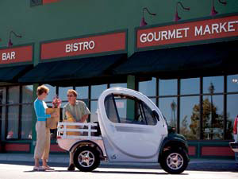
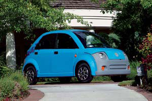
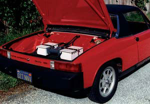
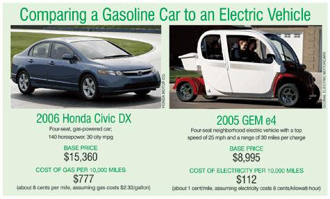
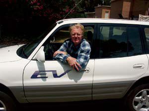
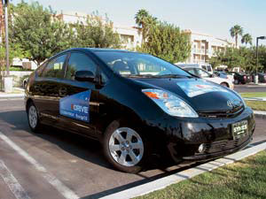
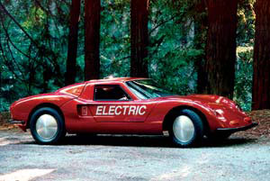

Drive An Electric Vehicle And Never Buy Gas Again
Clean and efficient, electric vehicles are finally coming of age.
By Bill Moore
April/May 2006
Electric vehicles - powered entirely by batteries rather than a gas engine - have been around ever since Henry Ford’s wife drove one in 1914. Today, they offer greener and much more affordable transportation than conventional cars and trucks.
One easy, affordable option that is gaining momentum is the “neighborhood electric vehicle” like the one shown above - a small, inexpensive car that can travel at 25 mph for up to 30 miles before it must be recharged. These clean, quiet little cars can be a great alternative for short, in-town trips. (And for those of you who are gearheads, see "Make Your Own Electric Car," below.) At the same time, new lighter-weight, faster-charging battery technologies are making speedier, longer-range electric vehicles (EVs) more feasible. These advances are combining with air pollution concerns and oil depletion issues to make electric transportation a hot topic.
For our oil-addicted nation, electric cars have two unexcelled virtues: They don’t rely on petroleum, and they are remarkably energy-efficient machines. The maximum theoretical efficiency of the typical gasoline engine is about 30 percent; diesels are about 35 percent efficient. But in real-world driving conditions, both numbers drop significantly. Only a tiny fraction of the energy in a gallon of gasoline actually ends up doing useful work - the rest is wasted as heat.
In contrast, electric vehicles are far more efficient than conventional cars. The motors of EVs exceed 90 percent efficiency, and their batteries are better than 85 percent efficient. In addition, some EVs have regenerative braking that can recapture as much as 30 percent of the vehicle’s kinetic energy to recharge the battery. Because they have fewer parts and are so much more efficient, EVs cost much less to operate.
For instance, the EV manufacturer Global Electric Motorcars (GEM) says its low-speed vehicles operate at a cost of just 1 cent per mile. A 2006 Honda Civic sedan operates at a cost of about 8 cents a mile - that’s an 8-to-1 ratio! (See the comparison chart in the Image Gallery.) Furthermore, if you recharge your electric car with wind or solar power, you could power your vehicle entirely with renewable energy. And once you pay off the initial cost of your system, the electricity would be free.
Are They Really Cleaner?
When talking about the virtues of electric cars, questions often arise about the air pollution generated from power plants (half of which burn coal). Several independent studies have shown that even if all the electricity used to recharge an EV’s battery pack came from an entirely coal-fired power grid, the power plant’s emissions still would be significantly less per mile driven than those from the average gasoline-powered vehicle. For details on these studies, see “Electric Vehicles and Pollution,” below.
The motors of electric cars are elegantly simple - there’s just one moving part, the rotor shaft. Whereas a gasoline engine requires complex emission sensors and controls, as well as catalysts and a muffler to make its exhaust a bit cleaner and less noisy, an EV generates no emissions and is wonderfully quiet in comparison. It also can have surprisingly brisk acceleration and speed. General Motors’ Impact, later re-christened the EV1, once held the land speed record for production electric cars at 183 mph and could go from zero to 60 mph in less than nine seconds. Of course, you give up range when you hotfoot it in an EV. But unlike their distant cousins - golf carts and forklifts - electric cars don’t have to be slackers in performance.
Gasoline-powered passenger vehicles account for 40 percent of U.S. oil consumption. And as we know all too well these days, much of that oil has to be imported and prices are expected to skyrocket as supplies decline. In contrast, most of our electricity comes from domestic fuel sources - coal, nuclear power, natural gas, hydropower and wind. This means that the more people who choose to drive electric vehicles, the more we can reduce our addiction to imported oil.
Tens of thousands of people already have opted to “go electric” by leaving the family sedan in the garage and driving an electric vehicle, such as the previously mentioned GEM. With sticker prices from about $5,000 to $15,000 and efficiencies equivalent to just pennies per mile, these low-speed “carlets” are catching on. And faster, longer-range models are on the horizon.
Neighborhood Electric Vehicles
The GEM and other low-speed electric cars are referred to as NEVs - neighborhood electric vehicles. They are intended solely for use on slow streets, airports, university campuses and industrial parks where speed is less of an issue than lower operating costs, convenience, and reduced noise and air pollution.
Officially, the National Highway Traffic Safety Administration (NHTSA) designates NEVs as “low-speed vehicles.” This regulation enables manufacturers to build battery-powered vehicles - usually designed for two to four passengers - that have top speeds of 25 mph. More importantly, the federal government allows these EVs to operate on public roads with speed limits of 35 mph or less, if state and local authorities also approve. To date, 44 states and the District of Columbia have legalized NEVs for these conditions. (Find the NEV laws in your state.) Because mixing slow-moving NEVs with heavier, faster automobile traffic raises safety concerns, NHTSA requires manufacturers to equip their vehicles with a number of safety features, including automobile-grade windshields, wipers, headlights, turn signals and seat belts.
As a result of the street-legal designation, an increasing number of manufacturers are producing NEVs in North America. Six leading companies are listed in Electric Vehicle Resources. Furthermore, the U.S. Department of Energy keeps a list of the most current models of each manufacturer at its Clean Cities Web site. Here’s another directory of smaller NEV manufacturers.
All NEVs share a number of features besides those prescribed by federal regulations. They typically use either 48- or 72-volt systems powered by common lead-acid batteries like those found in electric golf carts. They can be recharged in six to eight hours by plugging into standard 120-volt household outlets. For faster recharging, 240-volt systems are available - they reduce recharge time to only three or four hours. Drive it, park it and plug it in - no messy oil changes, no trips to the gas station and fewer repair bills.
The popularity of NEVs grew out of two trends in the 1990s. Retirees in the Sun Belt states wanted something better than golf carts for running short trips and errands around their planned communities. The second trend was the realization that an affordable electric car with true highway performance was still out of reach, largely because of the high cost of batteries. While automakers built nearly 5,000 freeway-capable electric cars to meet California’s short-lived Zero Emission Vehicle mandate, none chose to go into full-scale production. Today only about 1,000 of these cars remain on the road, mostly in California.
If you just need a vehicle that can zip around your neighborhood, then current electric car technology is easily up to the challenge, especially if you drive less than 30 miles a day. NEVs’ relatively inexpensive lead-acid batteries can be recharged overnight, and the estimated annual cost to drive an NEV 100 miles a week (at 8 cents per kilowatt-hour) is about $58. Doing the same in a 27 mpg car costs nearly $450 at $2.33 per gallon of gasoline - an NEV would save you about $390.
The savings realized from operating an NEV for local trips also go beyond the price of gasoline. The average gasoline engine generates the most pollution and undergoes the greatest engine wear in the first few miles of operation. A three-mile round trip to the grocery store for bread doesn’t give the catalytic converter enough time to warm up, and doesn’t allow engine lubricants to fully coat all the moving parts. In contrast, short trips are a piece a cake for the NEV.
Like any piece of machinery, NEVs have their issues. Every three to five years, their batteries must be replaced at a cost of about $1,000. Treat the batteries with respect - meaning you charge them regularly and don’t let their charges run too low - and they will perform better and work for the longer end of that range.
GEM currently is the dominant NEV manufacturer with more than 30,000 vehicles sold in five different models, including short- and long-bed cargo carriers (see photo). Once considered a vehicle only for the Sun Belt, GEMs have gradually worked their way as far north as Minnesota and Maine. GEM is based in Fargo, N.D., and was purchased by DaimlerChrysler in 2000. According to Mike Kalberer, the company’s marketing manager, GEM has about 150 dealerships in the United States. It also sells add-on options, such as cabin heaters, removable fiberglass doors with roll-down windows and canvas-frame doors for cool weather.
Many people have found NEVs handy for around-town errands where a gas car is unnecessary. One such GEM owner is Lew George, who lives in downtown Atlanta and drives his 2001 e2 every day for all his short errands and trips, from getting groceries, visiting the doctor and dentist, to going to the movie theater and eating out at restaurants.
“Living downtown means a lot of start-stop traffic, which the GEM is great for,” George says. “I own two gas cars, but sometimes they don’t even get started for two to three weeks at a time.”
In Atlanta, George says that recharging the batteries in his GEM is easy - even on the go - because he’s able to plug into public places, such as parking lots, garages, retail stores and supermarkets, and recharge his batteries for free. This gives George the benefit of driving farther - he doesn’t have to save half his battery charge to get home.
If you live in a Northern state, extremely cold weather can affect the performance of an NEV’s batteries, says Ken Smalligan, an automotive sales manager who sells GEMs in Muskegon, Mich. Smalligan suggests GEM owners who live in colder regions upgrade to gel batteries, which offer increased performance and life span. The cost of upgrading the GEM’s six lead-acid batteries to gel is about $300 ($50 for each battery).
Perhaps because of its origins in the cool climate of British Columbia, Dynasty Motor Car decided to develop an enclosed NEV that more closely resembles a car. The IT - variously pronounced “eye-tee” or “it”- is available in the United States in five models, including a four-passenger compact (see photo).
Other players in the NEV market are B.I.G. Man, Cart-Rite and Columbia ParCar - all of which have an open-air cab approach. (See “Electric Vehicle Resources,” below, for contact information.) Some golf cart manufacturers and small automakers in South Korea and China also are eyeing the U.S. EV market.
New EV Options
The weight and expense of batteries have been the biggest technical barriers to creating EVs comparable to gas-powered vehicles. But the recent development of more powerful, lighter-weight, faster-charging lithium-polymer batteries looks like a major breakthrough.
NEC and Subaru are working on an electric car that uses a lithium-ion battery the companies say can be recharged in minutes instead of hours. Depending on the application, the battery pack can be as small as a briefcase. By 2010, Mitsubishi plans to commercially release its MIEV concept - a line of electric cars that will use 20-kilowatt motors and lithium-ion battery chemistry that will recharge in less than one hour.
Numerous other lithium-polymer battery makers - both large and small - are joining the race to develop affordable, energy-dense packs for a wide range of portable electronic applications, including the next generation of power tools. That technology likely will find its way into both electric vehicles and gas/electric hybrids that increasingly rely on electricity instead of petrofuels for power.
Making Hybrid Cars More Efficient
As awareness of the benefits of electric transportation grows, some owners of the Toyota Prius, a gas/electric hybrid sedan, are adding an aftermarket button to manipulate the car’s computer, taking advantage of a latent EV mode. This modification causes a Prius to more fully utilize its electric motor by keeping the car in electric-only mode for longer distances than normal - for about one to two miles, or more specifically until the battery’s charge dips to a low level, your speed reaches 34 mph, the accelerator pedal is depressed more than three-fourths of the way down or you push the EV-mode button again.
Without the button, a Prius only travels very short distances before the gas engine takes over. You can install an EV-mode button yourself by ordering a kit from various Internet vendors such as www.coastaletech.com.
Taking the EV-mode one step further, several companies are working to offer a version of the Prius with a longer-range lithium-ion battery pack that can be recharged using a standard household power outlet. The result is a car that can be driven for 50 to 60 miles on electric power at residential speeds (less than 35 mph). On longer trips and at higher speeds, the engine reverts to its standard hybrid mode. (See Pay Less at the Pump: The Hybrid Revolution for more information.)
The Future is Battery-Powered
Small and light with room for up to four passengers, the electric vehicle of the future will move people efficiently over short distances between home and work at freeway speeds. Powered by lithium-ion batteries that can be recharged in just minutes, these nimble commuter cars might have a range of more than 180 miles, depending on the battery pack. In the future, manufacturers may also offer EVs at different costs for different ranges. For example, an electric vehicle with a range of 100 miles would cost less than one with a 200 mile range.
Larger electric vehicles probably will be plug-in hybrids that have a gasoline, diesel or some not-yet-developed engine that combines the virtues of both electric motors and internal-combustion engines, and burns some form of renewable fuel. Hydrogen or methanol fuel-cell range extenders could follow in a decade or two.
To paraphrase Mark Twain, the rumors of the electric car’s death have been greatly exaggerated. Instead, there appears to be a resurgence of interest in EVs as a feasible path to reduce our dependence on petroleum, with the added benefit of a cleaner environment. The era of fast, fun, clean, affordable and efficient electric cars is finally at hand.
Electric Vehicles and Pollution
When considering the environmental benefits of electric vehicles, many people wonder if the pollution from coal-fired electric power plants that provide the electricity used to run the vehicles is equal to or worse than that from gasoline-powered cars. But several studies have confirmed that electric transportation is much less polluting than conventional gas-powered vehicles.
A private analysis done in 1999 by Phil Karns - an engineer and EV1 lessee at the time - concluded that when powered by electricity from California’s comparatively clean power grid, an EV1 produced 97 percent less total pollution during its operation than the average gasoline vehicle in the state.
A more detailed study done for Health Canada, the nation’s heath-advocacy department, compared the well-to-wheel emissions of a Toyota RAV4 gasoline sport utility vehicle and its battery-powered counterpart. The study concluded that the electric RAV4, which relies primarily on electricity generated from coal, produces 55 percent to 59 percent less greenhouse gas emissions compared to the gas-powered RAV4. Furthermore, the electric RAV4 produces 80 percent to 92 percent less of other emissions (non-carbon dioxide), depending on the specific type of coal used.
Tokyo’s Seikei University performed a bottom-up analysis of the environmental impacts of a gas/electric hybrid vehicle compared to an entirely electric vehicle, including the energy used in the manufacture and operation of each. As expected, the hybrid produced less greenhouse gases than a gasoline model. But depending on the source of energy used to generate the electricity, the hybrid also beat the electric car. The exception was if the electricity came from hydropower (or other renewable energy sources, including the wind and sun), in which case the EV was the clear winner.
Make Your Own Electric Car
Anyone who has the time, talent and resources can convert a conventional automobile to electric drive. Go with a lightweight but sturdy “donor” vehicle without power steering or an automatic transmission. Among those cars suitable for conversion, the favorite choices are Porsches, Geos and Volkswagen Jettas and Rabbits. Ford Rangers and Chevy S10s are the most popular light-truck conversions. If you do most of the work yourself and already own the donor vehicle, you can convert one for about $6,000 to $8,000.
If you have someone convert a car for you, expect to pay about $15,000 to $20,000, plus the cost of the car. For this, you’ll get a basic electric car with 30 to 50 miles of range. Its relatively inexpensive and widely available deep-cycle lead-acid batteries will need replacement every three to five years, at a cost of about $1,000 to $1,500. A freeway-capable car typically will use from 16 to 24 6-volt lead-acid batteries wired together in series to produce between 96 and 144 volts. The more volts in the car, the faster the top speed and the longer the range. Driving at increased speeds, however, reduces the maximum range of the electric vehicle.
There are multiple Web sites and discussion groups dedicated to electric car conversions, as well as a handful of small, specialized companies in the United States and Canada. The Electric Auto Association has chapters around the country and in Canada that are eager to assist new members in going electric. Mother Earth News offers the book Convert It, by Michael Brown and Shari Prange, and detailed plans for a gas/electric hybrid conversion using a lightweight car (see "Electric Vehicle Resources," below).
Electric car conversion classes also are becoming available in some areas. Mike Parker of Modesto, Calif., teaches a course based on author Michael Brown’s conversion plans.
“You have to be a pretty darn good mechanic, but I want to teach people with shop experience how to do conversions themselves,” Parker says. “I also want to teach industrial arts teachers so they can pass on the information to students.” To that end, this summer Parker will be teaching a class of 10 to 20 students at the Turlock (Calif.) Adult School, and he says he’s looking into teaching an online class. For more information, call (209) 667-0643.
The advantages of driving a converted electric car are low operating costs, home recharging, independence from petroleum and the ability to recharge using wind or solar power. The disadvantages are battery replacement and reduced range, as well as no air conditioning, power steering, automatic transmission or power brakes.
Parker says that some communities, such as Turlock, have 120-volt outlets on downtown streetlights that are perfect for recharging electric cars. And where there aren’t public outlets, you can establish relationships with businesses to use their outdoor electrical outlets while you shop. “I personally have established an understanding with about 25 to 30 businesses to use their electrical outlets for my car,” Parker says. “As payment, I occasionally give them a few dollars.”
The cost of filling up an electric car is little more than that used to heat a pot of coffee, says Michael Hackleman, a renewable energy expert and author of the currently out-of-print book The New Electric Vehicles. “When shops and restaurants let me use their electrical outlets, I always offer them a quarter and explain that - even at 15 cents a kilowatt-hour - they make a profit every time I plug in. Electric cars aren’t going to impact their electricity bill.”
Electric Vehicle Resources
Neighborhood Electric Vehicle (NEV) manufacturers
Global Electric Motorcar (GEM)
(888) 871-4367
B.I.G. Man
(877) 424-4626
Cart-Rite
(203) 457-9352
Columbia ParCar
(800) 222-4653
Dynasty Electric Car
(866) 818-1688
Western Golf Car
(760) 329-4451
Conversion Groups
Electric Auto Association
This nonprofit promotes the adoption of electric vehicles. The Web site has plenty of technical information and conversion documentation, as well as useful links to state and regional chapters, and other Web sites.
Electric Car Owners Club
This club is an informal association of electric car owners and enthusiasts formed in 1982 by Frank Didik. The Web site offers an extensive library and photo collection of various electric cars worldwide.
EV Discussion List
This Web-based discussion list provides a forum for current and future EV issues, with an extensive information archive.
Green Car Club
(413) 774-6051
Organized by the Northeast Sustainable Energy Association, this club offers Web-based discussion groups, news, performance data, driving tips and reviews.
News and Information
EV World
An excellent weekly online publication that covers electric vehicles and related news.
Megawatt Motorworks
Comprehensive source of articles, photos and information.
U.S. Department of Energy’s Clean Cities Initiative
Find information about electric cars, NEVs and more.
Don’tCrush.com: The Campaign to Save Electric Vehicles
A coalition dedicated to stopping the destruction of existing electric vehicles produced by major automakers, with support from the Sierra Club, American Lung Association and Rainforest Action Network.
Distributors, Parts and Supplies
EVSource
List of distributors and suppliers
Canadian Electric Vehicles
Sells new and used electric cars, and conversion plans (ships to the United States and Canada)
P.O. Box 616, 1184 Middlegate Road
Errington, BC V0R 1V0
(250) 954-2230
EV Parts
Sells electric vehicles, parts and accessories
P.O. Box 221
Port Townsend, WA 98368
(360) 385-7082
Electro Automotive
Offers electric car conversion kits and accessories (owned by writer Michael Brown)
P.O. Box 1113-W
Felton, CA 95018-1113
(831) 429-1989
Bill Moore is the publisher and editor in chief of EV World, a weekly online publication focusing on electric vehicles and related news. He wrote “The Potential of Plug-ins” in the October/November 2005 issue.
|
 GLOBAL ELECTRIC MOTORCARS The GEM eS neighborhood electric vehicle |
 DYNASTY ELECTRIC CAR A Dynasty IT sedan. |
 ELECTRO AUTOMOTIVE A 1976 Porsche 914 powered by an electric motor (batteries shown in trunk). |
|
 ED BEGLEY JR. Although Toyota chose not to continue production of its all-electric RAV4, electric cars make sense to the people who own them, such as actor Ed Begley Jr. “My Toyota RAV4 EV handles great,” he says. “It’s the perfect car for around town, and the batteries are in perfect shape after nearly five years and 50,000 miles. The best thing is I get to fuel it with solar power from my rooftop.” |
 BILL MOORE Today, advanced, more powerful lithium-ion batteries are being developed that allow electric and gas/electric hybrid cars, such as the modified Toyota Prius, to significantly increase their performance and range. |
 ELECTRO AUTOMOTIVE The idea of an electric car conversion is nothing new - Mother Earth News wrote about Robert Bucy’s Renault in the March/April 1976 issue. |
 Made by Electro Automotive, this sporty electric conversion car uses a 1965 Aztec body and Volkswagen chassis. It’s powered by a 96-volt battery series and can travel up to 100 miles at a top speed of 85 mph. |
 |
|